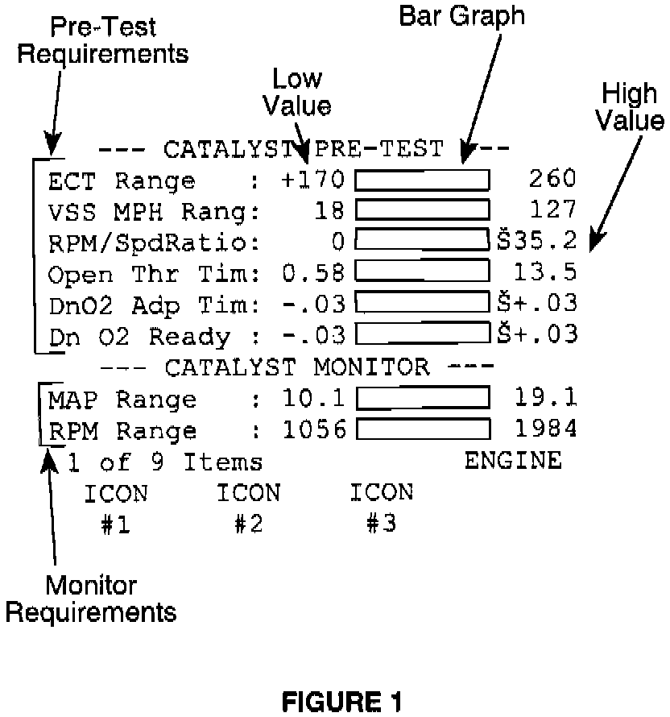

Repair Procedure
This bulletin involves operating the vehicle under specific parameters to run or complete the OBD monitors. The number of monitors applicable to a vehicle will vary by type of vehicle and emissions application. In addition, the parameters to run each monitor will vary.Preliminary Checks
1. Perform a MIL bulb check by switching the ignition key "ON" (engine off). The MIL will illuminate as a bulb check. If the MIL does not illuminate, repair the bulb or bulb circuit.
2. Connect a DRB III(R) to the vehicle. Select DRB III(R) standalone, current model year diagnostics, engine, DTC's and related functions, read DTC's.
3. Verity that no emission related DTC's are present and that the MIL is not illuminated with the engine running.
NOTE:
EMISSION RELATED DTC'S AND MIL ILLUMINATION MAY PREVENT OTHER OBD MONITORS FROM RUNNING. DTC'S THAT ILLUMINATE THE MIL MUST BE REPAIRED BEFORE ATTEMPTING TO RUN THE MONITORS.
OBD "CARB" Readiness Check
1. With the DRB III(R) select engine, OBD II monitors, CARB Readiness Status.
2. Read the monitor status. "YES" tells you that monitor has run and is ready for an I/M test, "NO" tells you that the monitor must be run. If all monitors listed read "YES", the vehicle can be returned to the customer for completion of their I/M test. Only monitors that read "NO" must be run to read "YES".
NOTE:
THE MONITORS LISTED IN THE OBD "CARB" READINESS SCREEN ARE THE ONLY ONES APPLICABLE FOR THE VEHICLE BEING WORKED ON.

The vehicle must be operated in various conditions (speed, temperature, etc.) for the monitors to run. Each monitor includes a pre-test and monitor test that can be viewed on the DRB III(R). The pre-test/monitor test screen lists all the preliminary parameters that must be met along with the running parameters for that specific monitor to run. An example of one screen is shown in Figure 1.
NOTE:
1997 AND PREVIOUS MODEL VEHICLES WILL HAVE A DIFFERENT LOOKING SCREEN. PRESS THE F1 KEY TO OBTAIN MONITOR RUN CONDITIONS. THE WAY IN WHICH THE MONITORS RUN WILL BE SIMILAR.
The following explains how to interpret each section of the screen:
PRE-TEST REQUIREMENTS
The pre-test requirements include all the operating parameters that must be met before the actual test can run. The vehicle must be operated until each item within the pre-test section are fulfilled.
LOW VALUE/HIGH VALUE/BAR GRAPH
The low value/high value provides the minimum and maximum operating conditions for each item (ie ECT Range must be between 170° and 260° F in Figure 1). The bar graph will begin to fill when the lowest value required for each item is met. This provides a visual indication that the parameters are being met. The vehicle should be driven until most of each pre-test bar graph is filled.
MONITOR REQUIREMENTS
Once all pre-test requirements are met, the vehicle must be brought within the parameters listed in the monitor requirements section for the monitors to begin running. As the monitor begins to run, the DRB III(R) will begin to beep. This is an audible indication that the test is in progress. If vehicle operation falls outside any of the parameters, the beeping will stop. If this occurs, the technician must determine if the pre-test requirements or the monitor requirements have fallen outside the window for the test and the vehicle must be driven accordingly for the test to restart. When the monitor completes its test, the DRB III(R) will beep 3 consecutive times.
NOTE:
THE PURGE FLOW PRE-TEST SCREEN WILL LOOK DIFFERENT THAN THE REST OF THE PRE-TEST/MONITOR SCREENS. PRESS THE F1 KEY ON THE DRB III(R) TO SEE A SIMILAR SCREEN FOR THIS MONITOR.
MONITOR RUN PROCESS
The following will provide the most efficient order along with tips to help run through the monitor tests quickly. The monitors listed include all possible monitors for either Front Wheel Drive or Rear Wheel Drive vehicles. The vehicle being worked on may have fewer monitors than the maximum available. Only those listed on the DRB III(R) are applicable for the vehicle being worked on. The only monitors that will require attention are those that read "NO" under the OBD "CARB" Readiness Status screen.
Front Wheel Drive
1. Evaporative Leak Detection Monitor - This test will require a cold start (possibly an overnight soak either indoors or out depending on conditions). The ambient (outside) temperature must be between 4° and 32° C (40° and 90° F) with the engine coolant temperature within 6° C (10° F) of ambient/battery temperature. Once the above criteria are met, use the pre-test/monitor test screen on the DRB III(R) to determine the remaining requirements.
2. Catalyst Monitor - The vehicle must be driven at highway speeds for the time listed in the pre-test screen. If the vehicle is equipped with a manual transaxle, use fourth gear to help meet the requirements.
3. EGR Monitor - It is necessary to maintain TPS, MAP, and RPM ranges listed in the pre-test screen for this test to complete.
4. O2 Sensor Monitor - The vehicle must be driven and brought to a stop for the time listed in the pre-test screen. Automatic transaxle vehicles must be left in drive during the stop period.
5. Purge Monitor - To see a similar screen format as listed in Figure 1, press the F1 key on the DRB III(R) while in the Purge Flow Pre-Test screen. The purge free (PF) cells must update and the monitor will attempt to run on every other throttle closure. Automatic transaxle vehicles must be left in drive for the test to run. If all parameters are met and the test still will not run, place your foot on the brake, open the throttle to 1/4 and then quickly close the throttle. This should allow the PF cells to update.
6. O2 Sensor Heater Monitor - The open throttle time for the O2 Heater pre-test must be exceeded. This monitor will run after the ignition key is switched "Off". After the DRB III(R) switches to No Response (approximately 3 minutes) turn the ignition key "On" and check the O2 Sensor Heater monitor status. It should have switched to "YES". All other monitors should be completed before running this test.
Rear Wheel Drive
1. O2 Sensor Heater Monitor - This test will require a cold start (possibly an overnight soak either indoors or outdoors depending on conditions). The ambient (outside) temperature must be between 18° and 38° C (0° and 100° F with the engine coolant temperature within 6° C (10° F) of ambient/battery temperature. Once the above criteria are met, use the pre-test/monitor test screen on the DRB III(R) to determine the remaining requirements.
2. Evaporative Leak Detection Monitor - This test will require a cold start (possibly an overnight soak either indoors or outdoors depending on conditions). The ambient (outside) temperature must be between 4° and 32° C (40° and 90° F) with the engine coolant temperature within 6° C (10° F) of ambient/battery temperature. Once the above criteria are met, use the pre-test/monitor test screen on the DRB III(R) to determine the remaining requirements.
3. Catalyst Monitor - The vehicle must be driven at highway speeds for the time listed in the pre-test screen. If the vehicle is equipped with a manual transmission, use 4th gear to help meet the requirements.
4. O2 Sensor Monitor - The vehicle must be driven and brought to a stop for the time listed in the pre-test screen. Automatic transmission vehicles must be left in drive during the stop period.
5. Purge Monitor - To see a similar screen format as listed in Figure 1, press the F1 key on the DRB III(R) while in the Purge Flow Pre-Test screen. The purge free (PF) cells must update and the monitor will attempt to run on every other throttle closure. Automatic transmission vehicles must be left in drive for the test to run. If all parameters are met and the test will still not run, place your foot on the brake, open the throttle to 1/4 and then quickly close the throttle. This should allow the PF cells to update.